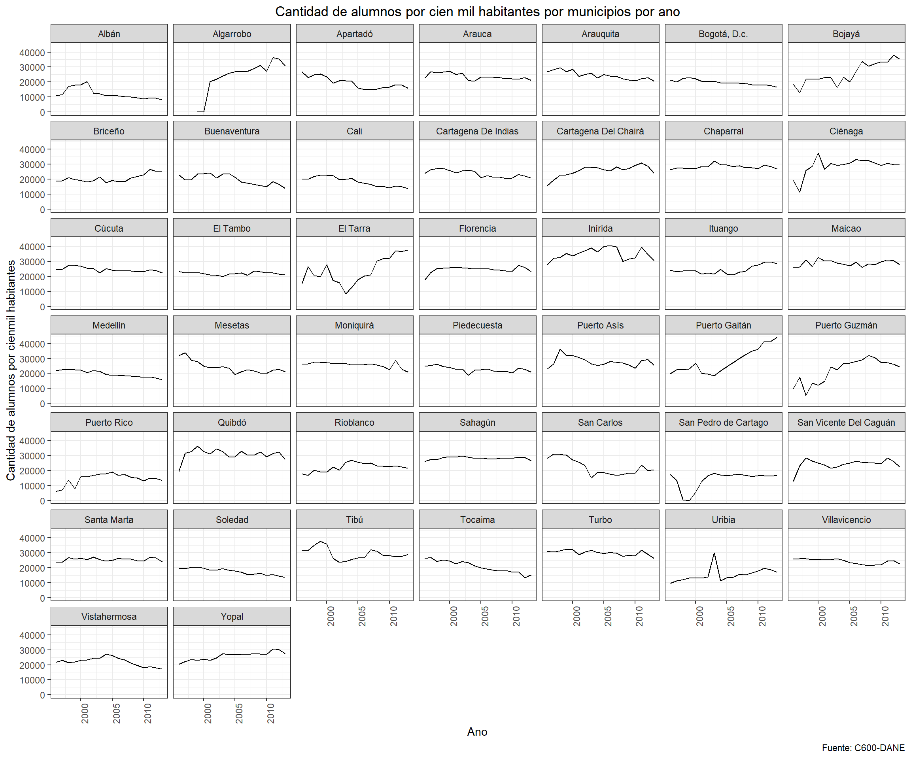

Con este codigo se importan todas las bases de datos y todos los paquetes necesarios.
#ANTES DE CORRER, ¡CORRER LA PESTANA "CODIGO PARA ARRANCAR TODO"!
#Set Working Directory
setwd("C:/Users/felig/Dropbox/Proyecto Juan Camilo")
rm(list=ls())
load("C:/Users/felig/Dropbox/Proyecto Juan Camilo/MergeBases_Environment.RData")
#Cargar paquetes
library(readstata13)
library(tidyr)
library(dplyr)
library(data.table)
library(readxl)
library(doBy)
library(vtable)
library(plyr)
library(gridExtra)
library(grid)
library(purrr)
library(psych)
library(ggplot2)
library(psych)
library(Hmisc)
library(matrixStats)
library(ggpubr)
library(vtable)
library(ggthemes)#Cambiarle los nombres a algunos municipios que no estan codificados igual
cede_educacion_44$municipio[cede_educacion_44$municipio=="Bojaya"] <- "Bojayá"
cede_educacion_44$municipio[cede_educacion_44$municipio=="Bogotá, D.C."] <- "Bogotá, D.c."
cede_educacion_44$municipio[cede_educacion_44$municipio=="Cartagena"] <- "Cartagena De Indias"
cede_educacion_44$municipio[cede_educacion_44$municipio=="Bojaya"] <- "Bojayá"
cede_educacion_44$municipio[cede_educacion_44$municipio=="Cartagena del Chairá"] <- "Cartagena Del Chairá"
cede_educacion_44$municipio[cede_educacion_44$municipio=="San Vicente del Caguán"] <- "San Vicente Del Caguán"Esta seccion esta dividiad por variables. Dentro de cada variable hay dos secciones. En la primer se observa un grafico que muestra las tendencias de la variable para los 44 municipios del ACDI-VOCA. *** La segunda seccion tiene los descriptivos de esas variables. Para mas informacion, acercarse a la descripcion de esa seccion.
Esta variable es la cantidad de alumnos de instituciones educativas ***
Observe que, para ciertas variables, se debe calcular un indice que normalice las poblaciones de cada municipio. Esta variable tiene esa transformacion. Esta variable se transforma para que quede medida por cien mil habitantes. Asi, la transformacion que se le hace a estas variables es:
\(T = \frac{N_{t}}{P_{t}} \times 100 000\)
En donde: \(T=\) La tasa por 100 mil habitantes \(N_{t}=\) Numero total de la variable de interes \(P_{t}=\) Poblacion total en el periodo \(t\)
Por lo tanto, generamos el siguiente codigo para poder crear esta variable. El nombre de esas variables es **_cienmil**
#Loop para saber poder saber qué observaciones concuerdan tanto en el año del censo como en el año del conflicto. Esto es necesario para generar el índice porque debe haber concordancia en el año de ambas bases.
a <- c()
cede_educacion_44$ano_base_general <- substring(cede_educacion_44$ano_base_general,1,4)
cede_educacion_44$ano_base_general <- as.numeric(cede_educacion_44$ano_base_general)
for(i in 1:nrow(cede_educacion_44)){
if(cede_educacion_44$ano[i]==cede_educacion_44$ano_base_general[i]){
a <- c(a,i)
}
}
#Limpiamos base de datos para que queden solamente las observaciones que concuerden en año de conflicto y en año del censo
cede_educacion_44_eq <- cede_educacion_44[a,]
cede_educacion_44_eq <- cede_educacion_44_eq %>%
dplyr::mutate(alumnos_cienmil=(alumn_total/pobl_tot)*100000)En este codigo se crea el grafico que muestra las tendencias en funcion del tiempo para todos los departamentos del cuestionario ACDI-VOCA.
cede_educacion_44_eq %>%
ggplot(aes(x = ano, y = alumnos_cienmil)) +
geom_line() +
facet_wrap(~municipio) +
theme_bw()+
labs(y='Cantidad de alumnos por cienmil habitantes', title='Cantidad de alumnos por cien mil habitantes por municipios por ano', x= 'Ano', caption="Fuente: C600-DANE") +
theme(plot.title = element_text(hjust = 0.5), axis.text.x = element_text(angle=90))+
coord_cartesian(xlim = c(1996:2013),
ylim=c(cede_educacion_44_eq$alumnos_cienmil[which.min(cede_educacion_44_eq$alumnos_cienmil)],
cede_educacion_44_eq$alumnos_cienmil[which.max(cede_educacion_44_eq$alumnos_cienmil)]))
En esta seccion se generan los descriptivos agregados de la variable.
Aqui se genera el collapse por anos para cada municipio. Es decir, aqui se encuentran los descriptivos de la variable para cada municipio, en donde se hizo un collapse por anos.
El nombre de la variable agregada es : descrip_
descrip_alumnos_cienmil <- summaryBy(alumnos_cienmil ~ municipio, cede_educacion_44_eq, FUN=c(sum,mean,sd), na.rm=T ) #Codigo para hacer descriptivos de los homicidios (collapse por anos)
descrip_alumnos_cienmil %<>% arrange(municipio)
print(descrip_alumnos_cienmil)## municipio alumnos_cienmil.sum alumnos_cienmil.mean
## 1 Albán 220882.9 12271.27
## 2 Algarrobo 363920.7 24261.38
## 3 Apartadó 352839.4 19602.19
## 4 Arauca 426254.3 23680.80
## 5 Arauquita 442013.9 24556.33
## 6 Bogotá, D.c. 356718.6 19817.70
## 7 Bojayá 467738.5 25985.47
## 8 Briceño 373091.5 20727.30
## 9 Buenaventura 355314.8 19739.71
## 10 Cali 331268.1 18403.78
## 11 Cartagena De Indias 425499.5 23638.86
## 12 Cartagena Del Chairá 460797.8 25599.88
## 13 Chaparral 508408.8 28244.93
## 14 Ciénaga 517625.7 28756.98
## 15 Cúcuta 441246.4 24513.69
## 16 El Tambo 394353.0 21908.50
## 17 El Tarra 427872.5 23770.69
## 18 Florencia 440663.0 24481.28
## 19 Inírida 627210.7 34845.04
## 20 Ituango 438586.9 24365.94
## 21 Maicao 517657.2 28758.73
## 22 Medellín 356054.4 19780.80
## 23 Mesetas 434872.3 24159.57
## 24 Moniquirá 463963.6 25775.76
## 25 Piedecuesta 409692.0 22760.67
## 26 Puerto Asís 502733.3 27929.63
## 27 Puerto Gaitán 507702.1 28205.67
## 28 Puerto Guzmán 398222.3 22123.46
## 29 Puerto Rico 259659.0 14425.50
## 30 Quibdó 555564.4 30864.69
## 31 Rioblanco 400282.3 22237.90
## 32 Sahagún 508708.8 28261.60
## 33 San Carlos 402387.4 22354.85
## 34 San Pedro de Cartago 252533.9 14029.66
## 35 San Vicente Del Caguán 436923.7 24273.54
## 36 Santa Marta 458015.9 25445.33
## 37 Soledad 314517.7 17473.20
## 38 Tibú 527267.3 29292.63
## 39 Tocaima 375093.4 20838.52
## 40 Turbo 538067.4 29892.63
## 41 Uribia 275596.6 15310.92
## 42 Villavicencio 435988.0 24221.55
## 43 Vistahermosa 396921.1 22051.17
## 44 Yopal 465421.2 25856.73
## alumnos_cienmil.sd
## 1 3631.9659
## 2 10763.6269
## 3 3900.4908
## 4 2104.7372
## 5 2714.2848
## 6 1705.8271
## 7 7207.5391
## 8 2724.8797
## 9 3403.8454
## 10 3089.7692
## 11 2378.0759
## 12 3669.1102
## 13 1376.3778
## 14 5678.3448
## 15 1539.8495
## 16 981.7425
## 17 8964.4745
## 18 2114.2628
## 19 3821.8673
## 20 2740.0123
## 21 1945.7878
## 22 2204.5328
## 23 4039.3956
## 24 1942.5762
## 25 1870.5939
## 26 3274.3685
## 27 8347.7577
## 28 7837.8486
## 29 3749.4132
## 30 3540.6537
## 31 2777.9480
## 32 960.8454
## 33 5339.7033
## 34 5794.7283
## 35 3386.8657
## 36 1138.1463
## 37 2142.6826
## 38 3976.7851
## 39 3949.6431
## 40 1690.3828
## 41 4556.1200
## 42 1679.8705
## 43 2830.4835
## 44 2706.7700A continuacion se generan las variables necesarias para hacer el \(\Delta\). Para obtener el \(\Delta\) se hace la diferencia de la variable entre los primeros 5 anos y los ultimos 5 anos de los datos disponibles. Por ejemplo, si la variable de interes se recolecto entre 1997 y 2016, el \(\Delta\) sera la reste entre el collapase de los anos 1997 a 2001 y el collapse de los anos 2012 a 2016. El nombre de la varible \(\Delta\) es: diff_
descrip_alumnos_cienmil_5antes <- cede_educacion_44_eq %>%
filter(ano<"2001-04-27") #Codigo para seleccionar solamente las variables que sean menores al ano 2008
descrip_alumnos_cienmil_5antes <- summaryBy(alumnos_cienmil ~ municipio, descrip_alumnos_cienmil_5antes, FUN=c(sum,mean,sd), na.rm=T ) #Descriptivos de esos anos.
descrip_alumnos_cienmil_5despues <- cede_educacion_44_eq %>%
filter(ano>"2008-04-27") #Codigo para seleccionar solamente las variables que sean mayores al ano 2008.
descrip_alumnos_cienmil_5despues <- summaryBy(alumnos_cienmil ~ municipio, descrip_alumnos_cienmil_5despues, FUN=c(sum,mean,sd), na.rm=T ) #Descriptivos de esos anos. Codigo para calcular el \(\Delta\)
diff_alumnos_cienmil_mean <- descrip_alumnos_cienmil_5antes$alumnos_cienmil.mean -descrip_alumnos_cienmil_5despues$alumnos_cienmil.mean
diff_alumnos_cienmil_sd <- descrip_alumnos_cienmil_5antes$alumnos_cienmil.sd -descrip_alumnos_cienmil_5despues$alumnos_cienmil.sd #Sacar diferencias entre esos estadisticos. Un valor negativo es que hay mas ataques en los ultimos 5 anos.
print(diff_alumnos_cienmil_mean)## [1] 6947.92869 -25465.92266 6892.21647 3675.10085 5705.98273
## [6] 3802.65819 -14371.20775 -5075.64021 6341.92454 6869.81163
## [11] 4244.66119 -6234.52519 -618.51567 -5121.87721 2689.39454
## [16] 141.48838 -13848.10637 -991.51974 -935.20627 -5008.14531
## [21] -643.91765 4855.76816 7254.00653 2970.89156 2870.72427
## [26] 3576.52720 -17150.28235 -14874.55368 -3248.23781 77.81530
## [31] -3237.66232 -149.87922 8688.16830 -8276.41170 -1978.14567
## [36] 66.19836 4661.91665 4873.41108 8603.67899 2298.58363
## [41] -5794.83534 2624.01825 4016.88963 -5804.57450#Loop para saber poder saber qué observaciones concuerdan tanto en el año del censo como en el año del conflicto. Esto es necesario para generar el índice porque debe haber concordancia en el año de ambas bases.
a <- c()
cede_educacion_44$ano_base_general <- substring(cede_educacion_44$ano_base_general,1,4)
cede_educacion_44$ano_base_general <- as.numeric(cede_educacion_44$ano_base_general)
for(i in 1:nrow(cede_educacion_44)){
if(cede_educacion_44$ano[i]==cede_educacion_44$ano_base_general[i]){
a <- c(a,i)
}
}
#Limpiamos base de datos para que queden solamente las observaciones que concuerden en año de conflicto y en año del censo
cede_educacion_44_eq <- cede_educacion_44[a,]
cede_educacion_44_eq <- cede_educacion_44_eq %>%
dplyr::mutate(phds_cienmil=((dies_docto_1+dies_docto_2)/pobl_tot)*100000)En este codigo se crea el grafico que muestra las tendencias en funcion del tiempo para todos los departamentos del cuestionario ACDI-VOCA.
cede_educacion_44_eq %>%
ggplot(aes(x = ano, y = phds_cienmil)) +
geom_line() +
facet_wrap(~municipio) +
theme_bw()+
labs(y='Cantidad de docentes con doctorado por cienmil habitantes', title='Cantidad de docentes con doctorado por cien mil habitantes por municipios por ano', x= 'Ano', caption="Fuente: C600-DANE") +
theme(plot.title = element_text(hjust = 0.5), axis.text.x = element_text(angle=90))+
coord_cartesian(xlim = c(2007:2015),
ylim=c(cede_educacion_44_eq$phds_cienmil[which.min(cede_educacion_44_eq$phds_cienmil)],
cede_educacion_44_eq$phds_cienmil[which.max(cede_educacion_44_eq$phds_cienmil)]))En esta seccion se generan los descriptivos agregados de la variable.
Aqui se genera el collapse por anos para cada municipio. Es decir, aqui se encuentran los descriptivos de la variable para cada municipio, en donde se hizo un collapse por anos.
El nombre de la variable agregada es : descrip_
descrip_phds_cienmil <- summaryBy(phds_cienmil ~ municipio, cede_educacion_44_eq, FUN=c(sum,mean,sd), na.rm=T ) #Codigo para hacer descriptivos de los homicidios (collapse por anos)
descrip_phds_cienmil %<>% arrange(municipio)
print(descrip_phds_cienmil)## municipio phds_cienmil.sum phds_cienmil.mean
## 1 Albán 0.0000000 NaN
## 2 Algarrobo 0.0000000 NaN
## 3 Apartadó 0.7147299 0.1021043
## 4 Arauca 37.9679451 4.2186606
## 5 Arauquita 0.0000000 NaN
## 6 Bogotá, D.c. 640.4843176 71.1649242
## 7 Bojayá 0.0000000 NaN
## 8 Briceño 0.0000000 NaN
## 9 Buenaventura 8.2480955 0.9164551
## 10 Cali 391.8298917 43.5366546
## 11 Cartagena De Indias 179.9960617 19.9995624
## 12 Cartagena Del Chairá 0.0000000 NaN
## 13 Chaparral 0.0000000 NaN
## 14 Ciénaga 5.8442813 0.8348973
## 15 Cúcuta 59.4603250 6.6067028
## 16 El Tambo 0.0000000 NaN
## 17 El Tarra 0.0000000 NaN
## 18 Florencia 137.5616148 15.2846239
## 19 Inírida 0.0000000 NaN
## 20 Ituango 0.0000000 NaN
## 21 Maicao 0.0000000 NaN
## 22 Medellín 978.0479168 108.6719908
## 23 Mesetas 0.0000000 NaN
## 24 Moniquirá 0.0000000 NaN
## 25 Piedecuesta 0.0000000 NaN
## 26 Puerto Asís 0.0000000 NaN
## 27 Puerto Gaitán 0.0000000 NaN
## 28 Puerto Guzmán 0.0000000 NaN
## 29 Puerto Rico 0.0000000 NaN
## 30 Quibdó 167.9938446 18.6659827
## 31 Rioblanco 0.0000000 NaN
## 32 Sahagún 0.0000000 NaN
## 33 San Carlos 0.0000000 NaN
## 34 San Pedro de Cartago 0.0000000 NaN
## 35 San Vicente Del Caguán 0.0000000 NaN
## 36 Santa Marta 170.9153447 18.9905939
## 37 Soledad 0.0000000 NaN
## 38 Tibú 0.0000000 NaN
## 39 Tocaima 0.0000000 NaN
## 40 Turbo 81.4923145 9.0547016
## 41 Uribia 0.0000000 NaN
## 42 Villavicencio 43.2663736 4.8073748
## 43 Vistahermosa 0.0000000 NaN
## 44 Yopal 3.0654652 0.3831832
## phds_cienmil.sd
## 1 NA
## 2 NA
## 3 0.2701425
## 4 1.8296583
## 5 NA
## 6 19.7839690
## 7 NA
## 8 NA
## 9 0.6521503
## 10 7.9349509
## 11 4.2722829
## 12 NA
## 13 NA
## 14 0.8774162
## 15 2.1037430
## 16 NA
## 17 NA
## 18 0.8539474
## 19 NA
## 20 NA
## 21 NA
## 22 22.9217392
## 23 NA
## 24 NA
## 25 NA
## 26 NA
## 27 NA
## 28 NA
## 29 NA
## 30 4.8891756
## 31 NA
## 32 NA
## 33 NA
## 34 NA
## 35 NA
## 36 7.4880469
## 37 NA
## 38 NA
## 39 NA
## 40 6.6132823
## 41 NA
## 42 0.9562913
## 43 NA
## 44 0.5673313A continuacion se generan las variables necesarias para hacer el \(\Delta\). Para obtener el \(\Delta\) se hace la diferencia de la variable entre los primeros 5 anos y los ultimos 5 anos de los datos disponibles. Por ejemplo, si la variable de interes se recolecto entre 1997 y 2016, el \(\Delta\) sera la reste entre el collapase de los anos 1997 a 2001 y el collapse de los anos 2012 a 2016. El nombre de la varible \(\Delta\) es: diff_
descrip_phds_cienmil_5antes <- cede_educacion_44_eq %>%
filter(ano<"2011-04-27") #Codigo para seleccionar solamente las variables que sean menores al ano 2008
descrip_phds_cienmil_5antes <- summaryBy(phds_cienmil ~ municipio, descrip_phds_cienmil_5antes, FUN=c(sum,mean,sd), na.rm=T ) #Descriptivos de esos anos.
descrip_phds_cienmil_5despues <- cede_educacion_44_eq %>%
filter(ano>"2010-04-27") #Codigo para seleccionar solamente las variables que sean mayores al ano 2008.
descrip_phds_cienmil_5despues <- summaryBy(phds_cienmil ~ municipio, descrip_phds_cienmil_5despues, FUN=c(sum,mean,sd), na.rm=T ) #Descriptivos de esos anos. Codigo para calcular el \(\Delta\)
diff_phds_cienmil_mean <- descrip_phds_cienmil_5antes$phds_cienmil.mean -descrip_phds_cienmil_5despues$phds_cienmil.mean
diff_phds_cienmil_sd <- descrip_phds_cienmil_5antes$phds_cienmil.sd -descrip_phds_cienmil_5despues$phds_cienmil.sd #Sacar diferencias entre esos estadisticos. Un valor negativo es que hay mas ataques en los ultimos 5 anos.
print(diff_phds_cienmil_mean)## [1] NaN NaN 0.1429460 -1.9408442 NaN
## [6] -24.9821258 NaN NaN -0.3994399 -7.8038474
## [11] -4.6973132 NaN NaN 1.1688563 -2.7855911
## [16] NaN NaN -0.1198376 NaN NaN
## [21] NaN -27.6721031 NaN NaN NaN
## [26] NaN NaN NaN NaN -6.6192292
## [31] NaN NaN NaN NaN NaN
## [36] -11.7165840 NaN NaN NaN -3.4071646
## [41] NaN -0.8767696 NaN -0.2437022En este codigo se crea el grafico que muestra las tendencias en funcion del tiempo para todos los departamentos del cuestionario ACDI-VOCA.
cede_educacion_44 %>%
ggplot(aes(x = ano, y = ind_alfa2005)) +
geom_point() +
facet_wrap(~municipio) +
theme_bw()+
labs(y='Tasa de alfabetismo', title='Tasa de alfabetismo por municipios por ano', x= 'Ano', caption="Fuente: C600-DANE") +
theme(plot.title = element_text(hjust = 0.5), axis.text.x = element_text(angle=90))+
coord_cartesian(xlim = c(1993:2013),
ylim=c(cede_educacion_44$ind_alfa2005[which.min(cede_educacion_44$ind_alfa2005)],cede_educacion_44$ind_alfa2005[which.max(cede_educacion_44$ind_alfa2005)]))Segun esta encuesta, la tasa de analfabetismo no ha cambiado (cuando se revisa el numero en bruto, igualmente, no hay variacion por municipio por ano.)
Por esta razon se decide culminar el analisis de esta variable aqui
Esta variable es una proyeccion de cuanta gente puede asistir al colegio. Como es una variable poblacional se va a hacer por cada cienmil habitantes.
Observe que, para ciertas variables, se debe calcular un indice que normalice las poblaciones de cada municipio. Esta variable tiene esa transformacion. Esta variable se transforma para que quede medida por cien mil habitantes. Asi, la transformacion que se le hace a estas variables es:
\(T = \frac{N_{t}}{P_{t}} \times 100 000\)
En donde: \(T=\) La tasa por 100 mil habitantes \(N_{t}=\) Numero total de la variable de interes \(P_{t}=\) Poblacion total en el periodo \(t\)
Por lo tanto, generamos el siguiente codigo para poder crear esta variable. El nombre de esas variables es **_cienmil**
#Loop para saber poder saber qué observaciones concuerdan tanto en el año del censo como en el año del conflicto. Esto es necesario para generar el índice porque debe haber concordancia en el año de ambas bases.
a <- c()
cede_educacion_44$ano_base_general <- substring(cede_educacion_44$ano_base_general,1,4)
cede_educacion_44$ano_base_general <- as.numeric(cede_educacion_44$ano_base_general)
for(i in 1:nrow(cede_educacion_44)){
if(cede_educacion_44$ano[i]==cede_educacion_44$ano_base_general[i]){
a <- c(a,i)
}
}
#Limpiamos base de datos para que queden solamente las observaciones que concuerden en año de conflicto y en año del censo
cede_educacion_44_eq <- cede_educacion_44[a,]
cede_educacion_44_eq <- cede_educacion_44_eq %>%
dplyr::mutate(estudiantes_proy_cienmil=((pobsimple_primaria_p+pobsimple_secundaria_p)/pobl_tot)*100000)En este codigo se crea el grafico que muestra las tendencias en funcion del tiempo para todos los departamentos del cuestionario ACDI-VOCA.
cede_educacion_44_eq %>%
ggplot(aes(x = ano, y = estudiantes_proy_cienmil)) +
geom_line() +
facet_wrap(~municipio) +
theme_bw()+
labs(y='poblacion en edad de asistir a primaria o secundaria', title='poblacion en edad de asistir a primaria o secundaria por municipios por ano', x= 'Ano', caption="Fuente: C600-DANE") +
theme(plot.title = element_text(hjust = 0.5), axis.text.x = element_text(angle=90))+
coord_cartesian(xlim = c(1991:2013),
ylim=c(cede_educacion_44_eq$estudiantes_proy_cienmil[which.min(cede_educacion_44_eq$estudiantes_proy_cienmil)],cede_educacion_44_eq$estudiantes_proy_cienmil[which.max(cede_educacion_44_eq$estudiantes_proy_cienmil)]))En esta seccion se generan los descriptivos agregados de la variable.
Aqui se genera el collapse por anos para cada municipio. Es decir, aqui se encuentran los descriptivos de la variable para cada municipio, en donde se hizo un collapse por anos.
El nombre de la variable agregada es : descrip_
descrip_estudiantes_proy_cienmil <- summaryBy(estudiantes_proy_cienmil ~ municipio, cede_educacion_44_eq, FUN=c(sum,mean,sd), na.rm=T ) #Codigo para hacer descriptivos de los homicidios (collapse por anos)
descrip_estudiantes_proy_cienmil %<>% arrange(municipio)
print(descrip_estudiantes_proy_cienmil)## municipio estudiantes_proy_cienmil.sum
## 1 Albán 500887.0
## 2 Algarrobo 396009.7
## 3 Apartadó 571088.0
## 4 Arauca 501663.7
## 5 Arauquita 563966.6
## 6 Bogotá, D.c. 435458.2
## 7 Bojayá 583924.0
## 8 Briceño 553974.6
## 9 Buenaventura 544136.8
## 10 Cali 425088.9
## 11 Cartagena De Indias 460507.1
## 12 Cartagena Del Chairá 554172.5
## 13 Chaparral 542531.1
## 14 Ciénaga 527810.4
## 15 Cúcuta 474284.9
## 16 El Tambo 486558.6
## 17 El Tarra 596474.3
## 18 Florencia 507784.8
## 19 Inírida 599536.2
## 20 Ituango 587218.8
## 21 Maicao 502200.9
## 22 Medellín 377732.9
## 23 Mesetas 525936.0
## 24 Moniquirá 480529.7
## 25 Piedecuesta 478416.3
## 26 Puerto Asís 550123.0
## 27 Puerto Gaitán 542259.2
## 28 Puerto Guzmán 593907.2
## 29 Puerto Rico 531101.6
## 30 Quibdó 601085.2
## 31 Rioblanco 541372.0
## 32 Sahagún 514317.0
## 33 San Carlos 492453.2
## 34 San Pedro de Cartago 503983.6
## 35 San Vicente Del Caguán 545611.5
## 36 Santa Marta 489365.0
## 37 Soledad 491391.4
## 38 Tibú 591105.7
## 39 Tocaima 439451.8
## 40 Turbo 598902.3
## 41 Uribia 541463.4
## 42 Villavicencio 477442.3
## 43 Vistahermosa 503618.6
## 44 Yopal 493012.7
## estudiantes_proy_cienmil.mean estudiantes_proy_cienmil.sd
## 1 23851.76 2389.5291
## 2 26400.65 182.0097
## 3 27194.67 1175.6709
## 4 23888.75 706.4886
## 5 26855.55 339.0541
## 6 20736.11 1804.9584
## 7 27805.90 947.6958
## 8 26379.74 1608.2871
## 9 25911.28 1684.6592
## 10 20242.33 1060.4962
## 11 21928.91 896.7472
## 12 26389.17 169.6119
## 13 25834.82 892.9510
## 14 25133.83 529.9105
## 15 22585.00 439.2114
## 16 23169.46 2557.2201
## 17 28403.54 441.9898
## 18 24180.23 930.9556
## 19 28549.34 2222.2486
## 20 27962.80 831.9411
## 21 23914.33 756.8853
## 22 17987.28 1629.5620
## 23 25044.57 608.6402
## 24 22882.36 1017.3463
## 25 22781.73 1673.6329
## 26 26196.34 611.3723
## 27 25821.87 1199.7731
## 28 28281.29 468.1712
## 29 25290.55 977.8077
## 30 28623.11 1645.7662
## 31 25779.62 2145.0890
## 32 24491.29 1728.8677
## 33 23450.15 1580.9722
## 34 23999.22 1827.3090
## 35 25981.50 622.1357
## 36 23303.09 485.1625
## 37 23399.59 1399.3441
## 38 28147.89 956.6730
## 39 20926.28 1177.1860
## 40 28519.16 1350.0434
## 41 25783.97 1276.8158
## 42 22735.35 1439.4637
## 43 23981.84 655.4594
## 44 23476.79 547.0553A continuacion se generan las variables necesarias para hacer el \(\Delta\). Para obtener el \(\Delta\) se hace la diferencia de la variable entre los primeros 5 anos y los ultimos 5 anos de los datos disponibles. Por ejemplo, si la variable de interes se recolecto entre 1997 y 2016, el \(\Delta\) sera la reste entre el collapase de los anos 1997 a 2001 y el collapse de los anos 2012 a 2016. El nombre de la varible \(\Delta\) es: diff_
descrip_estudiantes_proy_cienmil_5antes <- cede_educacion_44_eq %>%
filter(ano<"1996-04-27") #Codigo para seleccionar solamente las variables que sean menores al ano 2008
descrip_estudiantes_proy_cienmil_5antes <- summaryBy(estudiantes_proy_cienmil ~ municipio, descrip_estudiantes_proy_cienmil_5antes, FUN=c(sum,mean,sd), na.rm=T ) #Descriptivos de esos anos.
descrip_estudiantes_proy_cienmil_5despues <- cede_educacion_44_eq %>%
filter(ano>"2008-04-27") #Codigo para seleccionar solamente las variables que sean mayores al ano 2008.
descrip_estudiantes_proy_cienmil_5despues <- summaryBy(estudiantes_proy_cienmil ~ municipio, descrip_estudiantes_proy_cienmil_5despues, FUN=c(sum,mean,sd), na.rm=T ) #Descriptivos de esos anos. Codigo para calcular el \(\Delta\)
diff_estudiantes_proy_cienmil_mean <- descrip_estudiantes_proy_cienmil_5antes$estudiantes_proy_cienmil.mean -descrip_estudiantes_proy_cienmil_5despues$estudiantes_proy_cienmil.mean
diff_estudiantes_proy_cienmil_sd <- descrip_estudiantes_proy_cienmil_5antes$estudiantes_proy_cienmil.sd -descrip_estudiantes_proy_cienmil_5despues$estudiantes_proy_cienmil.sd #Sacar diferencias entre esos estadisticos. Un valor negativo es que hay mas ataques en los ultimos 5 anos.
print(diff_estudiantes_proy_cienmil_mean)## [1] 6176.28163 NaN -579.52921 -1805.26876 491.67415
## [6] 4878.08434 479.35627 3786.02354 4233.27746 2601.66063
## [11] 2402.54198 18.66810 -67.97985 1008.82970 988.82477
## [16] 6720.16518 -723.39523 2085.16926 -3193.06196 1551.09992
## [21] -247.76242 3800.12046 346.29064 1931.28803 4243.54494
## [26] 1041.04602 -2469.23949 1012.64236 1350.00439 -723.60083
## [31] -4445.48542 4352.38001 3206.90306 4707.91992 -209.57446
## [36] 862.97032 3683.70789 2410.84743 2213.99085 3296.96836
## [41] -2876.23573 2589.67043 559.47648 1098.46940En este codigo se crea el grafico que muestra las tendencias en funcion del tiempo para todos los departamentos del cuestionario ACDI-VOCA.
cede_educacion_44 %>%
ggplot(aes(x = ano, y = t_establ)) +
geom_line() +
facet_wrap(~municipio) +
theme_bw()+
labs(y='poblacion en edad de asistir a primaria o secundaria', title='poblacion en edad de asistir a primaria o secundaria por municipios por ano', x= 'Ano', caption="Fuente: C600-DANE") +
theme(plot.title = element_text(hjust = 0.5), axis.text.x = element_text(angle=90))+
coord_cartesian(xlim = c(1996:2013),
ylim=c(cede_educacion_44$t_establ[which.min(cede_educacion_44$t_establ)],cede_educacion_44$t_establ[which.max(cede_educacion_44$t_establ)]))En esta seccion se generan los descriptivos agregados de la variable.
Aqui se genera el collapse por anos para cada municipio. Es decir, aqui se encuentran los descriptivos de la variable para cada municipio, en donde se hizo un collapse por anos.
El nombre de la variable agregada es : descrip_
descrip_t_establ <- summaryBy(t_establ ~ municipio, cede_educacion_44, FUN=c(sum,mean,sd), na.rm=T ) #Codigo para hacer descriptivos de los homicidios (collapse por anos)
descrip_t_establ %<>% arrange(municipio)
print(descrip_t_establ)## municipio t_establ.sum t_establ.mean t_establ.sd
## 1 Albán 10600 23.55556 8.874416
## 2 Algarrobo 4125 11.00000 5.092723
## 3 Apartadó 27925 62.05556 13.156892
## 4 Arauca 54450 121.00000 14.244133
## 5 Arauquita 54725 121.61111 12.929218
## 6 Bogotá, D.c. 1423275 3162.83333 364.466424
## 7 Bojayá 16075 35.72222 9.624380
## 8 Briceño 17775 39.50000 3.357835
## 9 Buenaventura 233350 518.55556 177.344688
## 10 Cali 696650 1548.11111 188.082248
## 11 Cartagena De Indias 237850 528.55556 41.815991
## 12 Cartagena Del Chairá 64925 144.27778 34.537681
## 13 Chaparral 75575 167.94444 11.299093
## 14 Ciénaga 75850 168.55556 37.866578
## 15 Cúcuta 208400 463.11111 45.535528
## 16 El Tambo 74000 164.44444 26.544123
## 17 El Tarra 25625 56.94444 14.597313
## 18 Florencia 89400 198.66667 35.684525
## 19 Inírida 21100 46.88889 9.642201
## 20 Ituango 51650 114.77778 15.742766
## 21 Maicao 78400 174.22222 37.827347
## 22 Medellín 390700 868.22222 60.872055
## 23 Mesetas 29725 66.05556 14.654416
## 24 Moniquirá 18400 40.88889 4.463274
## 25 Piedecuesta 49200 109.33333 13.551025
## 26 Puerto Asís 86500 192.22222 43.080899
## 27 Puerto Gaitán 37475 83.27778 18.434878
## 28 Puerto Guzmán 56700 126.00000 49.344252
## 29 Puerto Rico 19700 43.77778 10.655339
## 30 Quibdó 70375 156.38889 25.589136
## 31 Rioblanco 45700 101.55556 5.215001
## 32 Sahagún 54175 120.38889 17.433101
## 33 San Carlos 30075 66.83333 12.812899
## 34 San Pedro de Cartago 7250 16.11111 6.435295
## 35 San Vicente Del Caguán 112300 249.55556 53.348063
## 36 Santa Marta 176475 392.16667 36.859225
## 37 Soledad 118200 262.66667 40.339594
## 38 Tibú 66575 147.94444 28.115401
## 39 Tocaima 16850 37.44444 3.307248
## 40 Turbo 88600 196.88889 36.474491
## 41 Uribia 32775 72.83333 70.872113
## 42 Villavicencio 138425 307.61111 34.183344
## 43 Vistahermosa 33025 73.38889 14.178071
## 44 Yopal 53700 119.33333 16.547832A continuacion se generan las variables necesarias para hacer el \(\Delta\). Para obtener el \(\Delta\) se hace la diferencia de la variable entre los primeros 5 anos y los ultimos 5 anos de los datos disponibles. Por ejemplo, si la variable de interes se recolecto entre 1997 y 2016, el \(\Delta\) sera la reste entre el collapase de los anos 1997 a 2001 y el collapse de los anos 2012 a 2016. El nombre de la varible \(\Delta\) es: diff_
descrip_t_establ_5antes <- cede_educacion_44 %>%
filter(ano<"2000-04-27") #Codigo para seleccionar solamente las variables que sean menores al ano 2008
descrip_t_establ_5antes <- summaryBy(t_establ ~ municipio, descrip_t_establ_5antes, FUN=c(sum,mean,sd), na.rm=T ) #Descriptivos de esos anos.
descrip_t_establ_5despues <- cede_educacion_44 %>%
filter(ano>"2008-04-27") #Codigo para seleccionar solamente las variables que sean mayores al ano 2008.
descrip_t_establ_5despues <- summaryBy(t_establ ~ municipio, descrip_t_establ_5despues, FUN=c(sum,mean,sd), na.rm=T ) #Descriptivos de esos anos. Codigo para calcular el \(\Delta\)
diff_t_establ_mean <- descrip_t_establ_5antes$t_establ.mean -descrip_t_establ_5despues$t_establ.mean
diff_t_establ_sd <- descrip_t_establ_5antes$t_establ.sd -descrip_t_establ_5despues$t_establ.sd #Sacar diferencias entre esos estadisticos. Un valor negativo es que hay mas ataques en los ultimos 5 anos.
print(diff_t_establ_mean)## [1] 10.8 -15.6 10.0 1.4 18.0 839.8 -19.0 -2.2 -385.8 -121.4
## [11] -25.6 -45.6 -17.0 32.0 76.4 -5.0 -13.6 -32.4 3.0 24.6
## [21] -48.6 69.4 11.4 -2.0 -16.2 27.8 -5.2 -104.0 -9.6 36.6
## [31] -6.8 5.2 13.4 -10.8 -42.8 -30.8 -54.8 44.4 4.8 11.2
## [41] 151.0 -54.8 -14.8 -16.8El objetivo de esta seccion es hacer las estadisticas inferenciales de las variables de interes con los items del ACDIVOCA. Si no sabe cuales son las variables ACDI-VOCA dirigirse a la pestana “Codigo para correr todo”.
En esta seccion se tiene en cuenta la variable de interes a la cual se le hizo collapse en todos los anos. Primero se hacen correlaciones y, luego, se hacen regresiones lineales.
Recuerde que las variables del ACDI-VOCA son: +Reconciliacion
+Disculpas
+Violencia
+Rencor
+Memoria (Memoria historica)
+Memoria_expectativa (Item creado a partir de la memoria y de la expectativa de esta)
#Vamos a hacerlo primero con la diferencia en los indices. En efecto, este capta una diferencia del pasado con hoy. Como el indice es del 2017, nos concentramos en eso.
#Hay algunas variables que tienen valores de infinito. Vamos a reemplazarlos por valores perdidos
descrip_alumnos_cienmil$alumnos_cienmil.mean[which(!is.finite(descrip_alumnos_cienmil$alumnos_cienmil.mean))] <- NA
descrip_phds_cienmil$phds_cienmil.mean[which(!is.finite(descrip_phds_cienmil$phds_cienmil.mean))] <- NA
descrip_estudiantes_proy_cienmil$estudiantes_proy_cienmil.mean[which(!is.finite(descrip_estudiantes_proy_cienmil$estudiantes_proy_cienmil.mean))] <- NA
descrip_t_establ$t_establ.mean[which(!is.finite(descrip_t_establ$t_establ.mean))] <- NA
correlaciones <- cbind(descrip_alumnos_cienmil$alumnos_cienmil.mean,
descrip_phds_cienmil$phds_cienmil.mean,
descrip_estudiantes_proy_cienmil$estudiantes_proy_cienmil.mean,
descrip_t_establ$t_establ.mean,
reconciliacion_agreg$reconciliacion.mean,
disculpas_agreg$disculpas.mean,
violencia_agreg$violencia.mean,
rencor_agreg$rencor.mean,
memoria_agreg$memoria.mean,
memoria_expectativa_agreg$memoria_expectativa.mean)
nombres <- c("alumnos_cienmil",
"doctores_cienmil",
"estudiantes_edad_estudiar",
"total_establecimientos",
"Reconciliacion",
"Disculpas",
"Violencia",
"Rencor",
"Memoria",
"Memoria_Expectativa")
colnames(correlaciones) <- nombres
rcorr(correlaciones, type="spearman") #Aqui hay cosas bien interesantes}## alumnos_cienmil doctores_cienmil
## alumnos_cienmil 1.00 -0.18
## doctores_cienmil -0.18 1.00
## estudiantes_edad_estudiar 0.40 -0.62
## total_establecimientos 0.12 0.78
## Reconciliacion 0.08 0.08
## Disculpas 0.04 0.29
## Violencia 0.14 -0.08
## Rencor 0.05 0.07
## Memoria -0.17 -0.02
## Memoria_Expectativa -0.01 0.05
## estudiantes_edad_estudiar total_establecimientos
## alumnos_cienmil 0.40 0.12
## doctores_cienmil -0.62 0.78
## estudiantes_edad_estudiar 1.00 -0.33
## total_establecimientos -0.33 1.00
## Reconciliacion -0.02 -0.06
## Disculpas -0.01 0.14
## Violencia -0.18 0.12
## Rencor 0.22 -0.04
## Memoria 0.06 0.02
## Memoria_Expectativa -0.02 0.09
## Reconciliacion Disculpas Violencia Rencor
## alumnos_cienmil 0.08 0.04 0.14 0.05
## doctores_cienmil 0.08 0.29 -0.08 0.07
## estudiantes_edad_estudiar -0.02 -0.01 -0.18 0.22
## total_establecimientos -0.06 0.14 0.12 -0.04
## Reconciliacion 1.00 0.09 -0.12 0.17
## Disculpas 0.09 1.00 -0.46 0.27
## Violencia -0.12 -0.46 1.00 -0.23
## Rencor 0.17 0.27 -0.23 1.00
## Memoria 0.18 0.14 -0.34 0.35
## Memoria_Expectativa 0.20 0.06 -0.05 0.42
## Memoria Memoria_Expectativa
## alumnos_cienmil -0.17 -0.01
## doctores_cienmil -0.02 0.05
## estudiantes_edad_estudiar 0.06 -0.02
## total_establecimientos 0.02 0.09
## Reconciliacion 0.18 0.20
## Disculpas 0.14 0.06
## Violencia -0.34 -0.05
## Rencor 0.35 0.42
## Memoria 1.00 0.65
## Memoria_Expectativa 0.65 1.00
##
## n
## alumnos_cienmil doctores_cienmil
## alumnos_cienmil 44 15
## doctores_cienmil 15 15
## estudiantes_edad_estudiar 44 15
## total_establecimientos 44 15
## Reconciliacion 44 15
## Disculpas 44 15
## Violencia 44 15
## Rencor 44 15
## Memoria 44 15
## Memoria_Expectativa 44 15
## estudiantes_edad_estudiar total_establecimientos
## alumnos_cienmil 44 44
## doctores_cienmil 15 15
## estudiantes_edad_estudiar 44 44
## total_establecimientos 44 44
## Reconciliacion 44 44
## Disculpas 44 44
## Violencia 44 44
## Rencor 44 44
## Memoria 44 44
## Memoria_Expectativa 44 44
## Reconciliacion Disculpas Violencia Rencor
## alumnos_cienmil 44 44 44 44
## doctores_cienmil 15 15 15 15
## estudiantes_edad_estudiar 44 44 44 44
## total_establecimientos 44 44 44 44
## Reconciliacion 44 44 44 44
## Disculpas 44 44 44 44
## Violencia 44 44 44 44
## Rencor 44 44 44 44
## Memoria 44 44 44 44
## Memoria_Expectativa 44 44 44 44
## Memoria Memoria_Expectativa
## alumnos_cienmil 44 44
## doctores_cienmil 15 15
## estudiantes_edad_estudiar 44 44
## total_establecimientos 44 44
## Reconciliacion 44 44
## Disculpas 44 44
## Violencia 44 44
## Rencor 44 44
## Memoria 44 44
## Memoria_Expectativa 44 44
##
## P
## alumnos_cienmil doctores_cienmil
## alumnos_cienmil 0.5159
## doctores_cienmil 0.5159
## estudiantes_edad_estudiar 0.0065 0.0134
## total_establecimientos 0.4241 0.0006
## Reconciliacion 0.6221 0.7905
## Disculpas 0.7971 0.2895
## Violencia 0.3644 0.7905
## Rencor 0.7360 0.8003
## Memoria 0.2769 0.9295
## Memoria_Expectativa 0.9696 0.8496
## estudiantes_edad_estudiar total_establecimientos
## alumnos_cienmil 0.0065 0.4241
## doctores_cienmil 0.0134 0.0006
## estudiantes_edad_estudiar 0.0310
## total_establecimientos 0.0310
## Reconciliacion 0.8931 0.6839
## Disculpas 0.9566 0.3812
## Violencia 0.2409 0.4337
## Rencor 0.1567 0.8112
## Memoria 0.7176 0.8823
## Memoria_Expectativa 0.8730 0.5777
## Reconciliacion Disculpas Violencia Rencor
## alumnos_cienmil 0.6221 0.7971 0.3644 0.7360
## doctores_cienmil 0.7905 0.2895 0.7905 0.8003
## estudiantes_edad_estudiar 0.8931 0.9566 0.2409 0.1567
## total_establecimientos 0.6839 0.3812 0.4337 0.8112
## Reconciliacion 0.5506 0.4251 0.2668
## Disculpas 0.5506 0.0018 0.0769
## Violencia 0.4251 0.0018 0.1314
## Rencor 0.2668 0.0769 0.1314
## Memoria 0.2499 0.3727 0.0238 0.0212
## Memoria_Expectativa 0.1821 0.7156 0.7539 0.0043
## Memoria Memoria_Expectativa
## alumnos_cienmil 0.2769 0.9696
## doctores_cienmil 0.9295 0.8496
## estudiantes_edad_estudiar 0.7176 0.8730
## total_establecimientos 0.8823 0.5777
## Reconciliacion 0.2499 0.1821
## Disculpas 0.3727 0.7156
## Violencia 0.0238 0.7539
## Rencor 0.0212 0.0043
## Memoria 0.0000
## Memoria_Expectativa 0.0000dfcorrelaciones <- as.data.frame(correlaciones)
regReconcililacion <- lm(Reconciliacion ~ correlaciones[,1:4], data=dfcorrelaciones)
summary(regReconcililacion)##
## Call:
## lm(formula = Reconciliacion ~ correlaciones[, 1:4], data = dfcorrelaciones)
##
## Residuals:
## Min 1Q Median 3Q Max
## -3.9386 -1.5737 -0.0703 1.1982 5.1830
##
## Coefficients:
## Estimate Std. Error
## (Intercept) -4.694e+00 9.610e+00
## correlaciones[, 1:4]alumnos_cienmil 3.383e-04 2.585e-04
## correlaciones[, 1:4]doctores_cienmil 3.143e-02 3.948e-02
## correlaciones[, 1:4]estudiantes_edad_estudiar -2.399e-05 4.053e-04
## correlaciones[, 1:4]total_establecimientos -2.020e-04 1.339e-03
## t value Pr(>|t|)
## (Intercept) -0.488 0.636
## correlaciones[, 1:4]alumnos_cienmil 1.309 0.220
## correlaciones[, 1:4]doctores_cienmil 0.796 0.444
## correlaciones[, 1:4]estudiantes_edad_estudiar -0.059 0.954
## correlaciones[, 1:4]total_establecimientos -0.151 0.883
##
## Residual standard error: 2.878 on 10 degrees of freedom
## (29 observations deleted due to missingness)
## Multiple R-squared: 0.2092, Adjusted R-squared: -0.1072
## F-statistic: 0.6612 on 4 and 10 DF, p-value: 0.6329regDisculpas <- lm(Disculpas ~ correlaciones[,1:4], data=dfcorrelaciones)
summary(regDisculpas)##
## Call:
## lm(formula = Disculpas ~ correlaciones[, 1:4], data = dfcorrelaciones)
##
## Residuals:
## Min 1Q Median 3Q Max
## -0.27010 -0.11355 -0.01397 0.10781 0.38173
##
## Coefficients:
## Estimate Std. Error
## (Intercept) 3.349e-01 7.267e-01
## correlaciones[, 1:4]alumnos_cienmil -9.199e-06 1.955e-05
## correlaciones[, 1:4]doctores_cienmil 3.541e-03 2.985e-03
## correlaciones[, 1:4]estudiantes_edad_estudiar 2.872e-05 3.065e-05
## correlaciones[, 1:4]total_establecimientos -1.448e-04 1.013e-04
## t value Pr(>|t|)
## (Intercept) 0.461 0.655
## correlaciones[, 1:4]alumnos_cienmil -0.470 0.648
## correlaciones[, 1:4]doctores_cienmil 1.186 0.263
## correlaciones[, 1:4]estudiantes_edad_estudiar 0.937 0.371
## correlaciones[, 1:4]total_establecimientos -1.430 0.183
##
## Residual standard error: 0.2176 on 10 degrees of freedom
## (29 observations deleted due to missingness)
## Multiple R-squared: 0.2432, Adjusted R-squared: -0.05947
## F-statistic: 0.8035 on 4 and 10 DF, p-value: 0.5501#Numero de personas en el regiem de subsidiado
regViolencia <- lm(Violencia ~ correlaciones[,1:4], data=dfcorrelaciones)
summary(regViolencia)##
## Call:
## lm(formula = Violencia ~ correlaciones[, 1:4], data = dfcorrelaciones)
##
## Residuals:
## Min 1Q Median 3Q Max
## -0.72720 -0.17133 0.00966 0.24950 0.60815
##
## Coefficients:
## Estimate Std. Error
## (Intercept) 1.021e+00 1.532e+00
## correlaciones[, 1:4]alumnos_cienmil 2.599e-05 4.121e-05
## correlaciones[, 1:4]doctores_cienmil -6.372e-03 6.293e-03
## correlaciones[, 1:4]estudiantes_edad_estudiar -1.135e-04 6.461e-05
## correlaciones[, 1:4]total_establecimientos 5.636e-05 2.134e-04
## t value Pr(>|t|)
## (Intercept) 0.666 0.520
## correlaciones[, 1:4]alumnos_cienmil 0.631 0.542
## correlaciones[, 1:4]doctores_cienmil -1.013 0.335
## correlaciones[, 1:4]estudiantes_edad_estudiar -1.758 0.109
## correlaciones[, 1:4]total_establecimientos 0.264 0.797
##
## Residual standard error: 0.4587 on 10 degrees of freedom
## (29 observations deleted due to missingness)
## Multiple R-squared: 0.2474, Adjusted R-squared: -0.05363
## F-statistic: 0.8218 on 4 and 10 DF, p-value: 0.5401regRencor <- lm(Rencor ~ correlaciones[,1:4], data=dfcorrelaciones)
summary(regRencor)##
## Call:
## lm(formula = Rencor ~ correlaciones[, 1:4], data = dfcorrelaciones)
##
## Residuals:
## Min 1Q Median 3Q Max
## -0.7703 -0.1179 0.0397 0.1179 0.5537
##
## Coefficients:
## Estimate Std. Error
## (Intercept) 2.565e+00 1.228e+00
## correlaciones[, 1:4]alumnos_cienmil -1.424e-05 3.303e-05
## correlaciones[, 1:4]doctores_cienmil 1.583e-03 5.043e-03
## correlaciones[, 1:4]estudiantes_edad_estudiar 5.060e-05 5.178e-05
## correlaciones[, 1:4]total_establecimientos 1.451e-04 1.711e-04
## t value Pr(>|t|)
## (Intercept) 2.090 0.0632 .
## correlaciones[, 1:4]alumnos_cienmil -0.431 0.6755
## correlaciones[, 1:4]doctores_cienmil 0.314 0.7600
## correlaciones[, 1:4]estudiantes_edad_estudiar 0.977 0.3515
## correlaciones[, 1:4]total_establecimientos 0.848 0.4161
## ---
## Signif. codes: 0 '***' 0.001 '**' 0.01 '*' 0.05 '.' 0.1 ' ' 1
##
## Residual standard error: 0.3676 on 10 degrees of freedom
## (29 observations deleted due to missingness)
## Multiple R-squared: 0.1629, Adjusted R-squared: -0.1719
## F-statistic: 0.4866 on 4 and 10 DF, p-value: 0.7458regMemoria <- lm(Memoria~ correlaciones[,1:4], data=dfcorrelaciones)
summary(regMemoria)##
## Call:
## lm(formula = Memoria ~ correlaciones[, 1:4], data = dfcorrelaciones)
##
## Residuals:
## Min 1Q Median 3Q Max
## -0.38768 -0.04433 -0.01131 0.12429 0.21140
##
## Coefficients:
## Estimate Std. Error
## (Intercept) 2.563e+00 6.446e-01
## correlaciones[, 1:4]alumnos_cienmil -1.930e-05 1.734e-05
## correlaciones[, 1:4]doctores_cienmil 8.844e-03 2.648e-03
## correlaciones[, 1:4]estudiantes_edad_estudiar 4.635e-05 2.718e-05
## correlaciones[, 1:4]total_establecimientos -1.968e-04 8.980e-05
## t value Pr(>|t|)
## (Intercept) 3.976 0.00262 **
## correlaciones[, 1:4]alumnos_cienmil -1.113 0.29171
## correlaciones[, 1:4]doctores_cienmil 3.340 0.00749 **
## correlaciones[, 1:4]estudiantes_edad_estudiar 1.705 0.11900
## correlaciones[, 1:4]total_establecimientos -2.192 0.05320 .
## ---
## Signif. codes: 0 '***' 0.001 '**' 0.01 '*' 0.05 '.' 0.1 ' ' 1
##
## Residual standard error: 0.193 on 10 degrees of freedom
## (29 observations deleted due to missingness)
## Multiple R-squared: 0.5477, Adjusted R-squared: 0.3668
## F-statistic: 3.027 on 4 and 10 DF, p-value: 0.07076regMemoria_Expectativa <- lm(Memoria_Expectativa~correlaciones[,1:4], data=dfcorrelaciones)
summary(regMemoria_Expectativa)##
## Call:
## lm(formula = Memoria_Expectativa ~ correlaciones[, 1:4], data = dfcorrelaciones)
##
## Residuals:
## Min 1Q Median 3Q Max
## -0.63167 -0.07065 0.03876 0.14163 0.59431
##
## Coefficients:
## Estimate Std. Error
## (Intercept) 3.165e+00 1.099e+00
## correlaciones[, 1:4]alumnos_cienmil -1.418e-05 2.956e-05
## correlaciones[, 1:4]doctores_cienmil 4.312e-03 4.513e-03
## correlaciones[, 1:4]estudiantes_edad_estudiar 1.887e-05 4.634e-05
## correlaciones[, 1:4]total_establecimientos -8.254e-05 1.531e-04
## t value Pr(>|t|)
## (Intercept) 2.881 0.0164 *
## correlaciones[, 1:4]alumnos_cienmil -0.480 0.6417
## correlaciones[, 1:4]doctores_cienmil 0.955 0.3619
## correlaciones[, 1:4]estudiantes_edad_estudiar 0.407 0.6925
## correlaciones[, 1:4]total_establecimientos -0.539 0.6015
## ---
## Signif. codes: 0 '***' 0.001 '**' 0.01 '*' 0.05 '.' 0.1 ' ' 1
##
## Residual standard error: 0.329 on 10 degrees of freedom
## (29 observations deleted due to missingness)
## Multiple R-squared: 0.1078, Adjusted R-squared: -0.2491
## F-statistic: 0.302 on 4 and 10 DF, p-value: 0.8701Observe que en estas regresiones hay un resultado interesante y es que el numero de personas que hayan terminado los estudios de doctorado sirve como predictor del indice de memoria.Es significativo al 5%.
En esta seccion se tiene en cuenta el \(\Delta\) de la variable de interes. Primero se hacen correlaciones y, luego, se hacen regresiones lineales.
#Vamos a hacerlo primero con la diferencia en los indices. En efecto, este capta una diferencia del pasado con hoy. Como el indice es del 2017, nos concentramos en eso.
#Hay algunas variables que tienen valores de infinito. Vamos a reemplazarlos por valores perdidos
diff_alumnos_cienmil_mean[which(!is.finite(diff_alumnos_cienmil_mean))] <- NA
diff_phds_cienmil_mean[which(!is.finite(diff_phds_cienmil_mean))] <- NA
diff_estudiantes_proy_cienmil_mean[which(!is.finite(diff_estudiantes_proy_cienmil_mean))] <- NA
diff_t_establ_mean[which(!is.finite(diff_t_establ_mean))] <- NA
correlaciones <- cbind(diff_alumnos_cienmil_mean,
diff_phds_cienmil_mean,
diff_estudiantes_proy_cienmil_mean,
diff_t_establ_mean,
reconciliacion_agreg$reconciliacion.mean,
disculpas_agreg$disculpas.mean,
violencia_agreg$violencia.mean,
rencor_agreg$rencor.mean,
memoria_agreg$memoria.mean,
memoria_expectativa_agreg$memoria_expectativa.mean)
nombres <- c("alumnos_cienmil",
"doctores_cienmil",
"estudiantes_edad_estudiar",
"total_establecimientos",
"Reconciliacion",
"Disculpas",
"Violencia",
"Rencor",
"Memoria",
"Memoria_Expectativa")
colnames(correlaciones) <- nombres
rcorr(correlaciones, type="spearman") #Aqui hay cosas bien interesantes}## alumnos_cienmil doctores_cienmil
## alumnos_cienmil 1.00 -0.28
## doctores_cienmil -0.28 1.00
## estudiantes_edad_estudiar 0.35 -0.32
## total_establecimientos 0.24 -0.27
## Reconciliacion -0.05 0.10
## Disculpas 0.18 -0.08
## Violencia 0.04 -0.10
## Rencor -0.16 0.08
## Memoria 0.10 -0.15
## Memoria_Expectativa -0.10 0.10
## estudiantes_edad_estudiar total_establecimientos
## alumnos_cienmil 0.35 0.24
## doctores_cienmil -0.32 -0.27
## estudiantes_edad_estudiar 1.00 -0.01
## total_establecimientos -0.01 1.00
## Reconciliacion 0.03 0.16
## Disculpas -0.06 -0.20
## Violencia -0.08 0.12
## Rencor 0.03 -0.03
## Memoria 0.26 0.10
## Memoria_Expectativa 0.25 0.01
## Reconciliacion Disculpas Violencia Rencor
## alumnos_cienmil -0.05 0.18 0.04 -0.16
## doctores_cienmil 0.10 -0.08 -0.10 0.08
## estudiantes_edad_estudiar 0.03 -0.06 -0.08 0.03
## total_establecimientos 0.16 -0.20 0.12 -0.03
## Reconciliacion 1.00 0.09 -0.12 0.17
## Disculpas 0.09 1.00 -0.46 0.27
## Violencia -0.12 -0.46 1.00 -0.23
## Rencor 0.17 0.27 -0.23 1.00
## Memoria 0.18 0.14 -0.34 0.35
## Memoria_Expectativa 0.20 0.06 -0.05 0.42
## Memoria Memoria_Expectativa
## alumnos_cienmil 0.10 -0.10
## doctores_cienmil -0.15 0.10
## estudiantes_edad_estudiar 0.26 0.25
## total_establecimientos 0.10 0.01
## Reconciliacion 0.18 0.20
## Disculpas 0.14 0.06
## Violencia -0.34 -0.05
## Rencor 0.35 0.42
## Memoria 1.00 0.65
## Memoria_Expectativa 0.65 1.00
##
## n
## alumnos_cienmil doctores_cienmil
## alumnos_cienmil 44 15
## doctores_cienmil 15 15
## estudiantes_edad_estudiar 43 15
## total_establecimientos 44 15
## Reconciliacion 44 15
## Disculpas 44 15
## Violencia 44 15
## Rencor 44 15
## Memoria 44 15
## Memoria_Expectativa 44 15
## estudiantes_edad_estudiar total_establecimientos
## alumnos_cienmil 43 44
## doctores_cienmil 15 15
## estudiantes_edad_estudiar 43 43
## total_establecimientos 43 44
## Reconciliacion 43 44
## Disculpas 43 44
## Violencia 43 44
## Rencor 43 44
## Memoria 43 44
## Memoria_Expectativa 43 44
## Reconciliacion Disculpas Violencia Rencor
## alumnos_cienmil 44 44 44 44
## doctores_cienmil 15 15 15 15
## estudiantes_edad_estudiar 43 43 43 43
## total_establecimientos 44 44 44 44
## Reconciliacion 44 44 44 44
## Disculpas 44 44 44 44
## Violencia 44 44 44 44
## Rencor 44 44 44 44
## Memoria 44 44 44 44
## Memoria_Expectativa 44 44 44 44
## Memoria Memoria_Expectativa
## alumnos_cienmil 44 44
## doctores_cienmil 15 15
## estudiantes_edad_estudiar 43 43
## total_establecimientos 44 44
## Reconciliacion 44 44
## Disculpas 44 44
## Violencia 44 44
## Rencor 44 44
## Memoria 44 44
## Memoria_Expectativa 44 44
##
## P
## alumnos_cienmil doctores_cienmil
## alumnos_cienmil 0.3147
## doctores_cienmil 0.3147
## estudiantes_edad_estudiar 0.0211 0.2427
## total_establecimientos 0.1225 0.3278
## Reconciliacion 0.7636 0.7134
## Disculpas 0.2450 0.7710
## Violencia 0.7803 0.7325
## Rencor 0.2873 0.7710
## Memoria 0.5175 0.5936
## Memoria_Expectativa 0.5045 0.7325
## estudiantes_edad_estudiar total_establecimientos
## alumnos_cienmil 0.0211 0.1225
## doctores_cienmil 0.2427 0.3278
## estudiantes_edad_estudiar 0.9701
## total_establecimientos 0.9701
## Reconciliacion 0.8280 0.2938
## Disculpas 0.7033 0.1836
## Violencia 0.5951 0.4278
## Rencor 0.8536 0.8466
## Memoria 0.0877 0.5324
## Memoria_Expectativa 0.1007 0.9479
## Reconciliacion Disculpas Violencia Rencor
## alumnos_cienmil 0.7636 0.2450 0.7803 0.2873
## doctores_cienmil 0.7134 0.7710 0.7325 0.7710
## estudiantes_edad_estudiar 0.8280 0.7033 0.5951 0.8536
## total_establecimientos 0.2938 0.1836 0.4278 0.8466
## Reconciliacion 0.5506 0.4251 0.2668
## Disculpas 0.5506 0.0018 0.0769
## Violencia 0.4251 0.0018 0.1314
## Rencor 0.2668 0.0769 0.1314
## Memoria 0.2499 0.3727 0.0238 0.0212
## Memoria_Expectativa 0.1821 0.7156 0.7539 0.0043
## Memoria Memoria_Expectativa
## alumnos_cienmil 0.5175 0.5045
## doctores_cienmil 0.5936 0.7325
## estudiantes_edad_estudiar 0.0877 0.1007
## total_establecimientos 0.5324 0.9479
## Reconciliacion 0.2499 0.1821
## Disculpas 0.3727 0.7156
## Violencia 0.0238 0.7539
## Rencor 0.0212 0.0043
## Memoria 0.0000
## Memoria_Expectativa 0.0000dfcorrelaciones <- as.data.frame(correlaciones)
regReconcililacion <- lm(Reconciliacion ~ correlaciones[,1:4], data=dfcorrelaciones)
summary(regReconcililacion)##
## Call:
## lm(formula = Reconciliacion ~ correlaciones[, 1:4], data = dfcorrelaciones)
##
## Residuals:
## Min 1Q Median 3Q Max
## -4.5738 -2.0838 0.4407 1.2041 4.7512
##
## Coefficients:
## Estimate Std. Error
## (Intercept) 3.2939462 1.1328030
## correlaciones[, 1:4]alumnos_cienmil -0.0002108 0.0002225
## correlaciones[, 1:4]doctores_cienmil 0.0156852 0.1325246
## correlaciones[, 1:4]estudiantes_edad_estudiar 0.0003310 0.0004806
## correlaciones[, 1:4]total_establecimientos 0.0019768 0.0042117
## t value Pr(>|t|)
## (Intercept) 2.908 0.0156 *
## correlaciones[, 1:4]alumnos_cienmil -0.948 0.3656
## correlaciones[, 1:4]doctores_cienmil 0.118 0.9081
## correlaciones[, 1:4]estudiantes_edad_estudiar 0.689 0.5067
## correlaciones[, 1:4]total_establecimientos 0.469 0.6489
## ---
## Signif. codes: 0 '***' 0.001 '**' 0.01 '*' 0.05 '.' 0.1 ' ' 1
##
## Residual standard error: 2.978 on 10 degrees of freedom
## (29 observations deleted due to missingness)
## Multiple R-squared: 0.1533, Adjusted R-squared: -0.1854
## F-statistic: 0.4527 on 4 and 10 DF, p-value: 0.7687regDisculpas <- lm(Disculpas ~ correlaciones[,1:4], data=dfcorrelaciones)
summary(regDisculpas)##
## Call:
## lm(formula = Disculpas ~ correlaciones[, 1:4], data = dfcorrelaciones)
##
## Residuals:
## Min 1Q Median 3Q Max
## -0.24914 -0.07555 -0.02578 0.04520 0.34602
##
## Coefficients:
## Estimate Std. Error
## (Intercept) 7.346e-01 7.022e-02
## correlaciones[, 1:4]alumnos_cienmil 4.604e-06 1.379e-05
## correlaciones[, 1:4]doctores_cienmil -4.086e-03 8.215e-03
## correlaciones[, 1:4]estudiantes_edad_estudiar 2.032e-05 2.979e-05
## correlaciones[, 1:4]total_establecimientos -6.265e-04 2.611e-04
## t value Pr(>|t|)
## (Intercept) 10.461 1.05e-06 ***
## correlaciones[, 1:4]alumnos_cienmil 0.334 0.7454
## correlaciones[, 1:4]doctores_cienmil -0.497 0.6297
## correlaciones[, 1:4]estudiantes_edad_estudiar 0.682 0.5107
## correlaciones[, 1:4]total_establecimientos -2.400 0.0373 *
## ---
## Signif. codes: 0 '***' 0.001 '**' 0.01 '*' 0.05 '.' 0.1 ' ' 1
##
## Residual standard error: 0.1846 on 10 degrees of freedom
## (29 observations deleted due to missingness)
## Multiple R-squared: 0.4556, Adjusted R-squared: 0.2378
## F-statistic: 2.092 on 4 and 10 DF, p-value: 0.1568regViolencia <- lm(Violencia ~ correlaciones[,1:4], data=dfcorrelaciones)
summary(regViolencia)##
## Call:
## lm(formula = Violencia ~ correlaciones[, 1:4], data = dfcorrelaciones)
##
## Residuals:
## Min 1Q Median 3Q Max
## -0.85915 -0.18047 -0.01072 0.32760 0.62188
##
## Coefficients:
## Estimate Std. Error
## (Intercept) -1.097e+00 1.869e-01
## correlaciones[, 1:4]alumnos_cienmil -2.005e-05 3.670e-05
## correlaciones[, 1:4]doctores_cienmil -1.901e-02 2.186e-02
## correlaciones[, 1:4]estudiantes_edad_estudiar -7.488e-05 7.928e-05
## correlaciones[, 1:4]total_establecimientos -1.024e-04 6.948e-04
## t value Pr(>|t|)
## (Intercept) -5.870 0.000157 ***
## correlaciones[, 1:4]alumnos_cienmil -0.546 0.596773
## correlaciones[, 1:4]doctores_cienmil -0.869 0.404994
## correlaciones[, 1:4]estudiantes_edad_estudiar -0.944 0.367215
## correlaciones[, 1:4]total_establecimientos -0.147 0.885802
## ---
## Signif. codes: 0 '***' 0.001 '**' 0.01 '*' 0.05 '.' 0.1 ' ' 1
##
## Residual standard error: 0.4912 on 10 degrees of freedom
## (29 observations deleted due to missingness)
## Multiple R-squared: 0.1369, Adjusted R-squared: -0.2084
## F-statistic: 0.3964 on 4 and 10 DF, p-value: 0.8069regRencor <- lm(Rencor ~ correlaciones[,1:4], data=dfcorrelaciones)
summary(regRencor)##
## Call:
## lm(formula = Rencor ~ correlaciones[, 1:4], data = dfcorrelaciones)
##
## Residuals:
## Min 1Q Median 3Q Max
## -0.64975 -0.11151 0.06068 0.17308 0.44209
##
## Coefficients:
## Estimate Std. Error t value
## (Intercept) 3.433e+00 1.340e-01 25.624
## correlaciones[, 1:4]alumnos_cienmil 3.313e-05 2.631e-05 1.259
## correlaciones[, 1:4]doctores_cienmil 7.961e-03 1.567e-02 0.508
## correlaciones[, 1:4]estudiantes_edad_estudiar 4.543e-05 5.684e-05 0.799
## correlaciones[, 1:4]total_establecimientos 3.591e-04 4.981e-04 0.721
## Pr(>|t|)
## (Intercept) 1.88e-10 ***
## correlaciones[, 1:4]alumnos_cienmil 0.237
## correlaciones[, 1:4]doctores_cienmil 0.623
## correlaciones[, 1:4]estudiantes_edad_estudiar 0.443
## correlaciones[, 1:4]total_establecimientos 0.487
## ---
## Signif. codes: 0 '***' 0.001 '**' 0.01 '*' 0.05 '.' 0.1 ' ' 1
##
## Residual standard error: 0.3521 on 10 degrees of freedom
## (29 observations deleted due to missingness)
## Multiple R-squared: 0.2319, Adjusted R-squared: -0.07528
## F-statistic: 0.755 on 4 and 10 DF, p-value: 0.5772regMemoria <- lm(Memoria~ correlaciones[,1:4], data=dfcorrelaciones)
summary(regMemoria)##
## Call:
## lm(formula = Memoria ~ correlaciones[, 1:4], data = dfcorrelaciones)
##
## Residuals:
## Min 1Q Median 3Q Max
## -0.3649 -0.1535 -0.0171 0.1315 0.4298
##
## Coefficients:
## Estimate Std. Error
## (Intercept) 3.173e+00 9.294e-02
## correlaciones[, 1:4]alumnos_cienmil 2.152e-06 1.825e-05
## correlaciones[, 1:4]doctores_cienmil -1.685e-02 1.087e-02
## correlaciones[, 1:4]estudiantes_edad_estudiar 4.940e-06 3.943e-05
## correlaciones[, 1:4]total_establecimientos -4.282e-04 3.456e-04
## t value Pr(>|t|)
## (Intercept) 34.135 1.1e-11 ***
## correlaciones[, 1:4]alumnos_cienmil 0.118 0.909
## correlaciones[, 1:4]doctores_cienmil -1.549 0.152
## correlaciones[, 1:4]estudiantes_edad_estudiar 0.125 0.903
## correlaciones[, 1:4]total_establecimientos -1.239 0.244
## ---
## Signif. codes: 0 '***' 0.001 '**' 0.01 '*' 0.05 '.' 0.1 ' ' 1
##
## Residual standard error: 0.2443 on 10 degrees of freedom
## (29 observations deleted due to missingness)
## Multiple R-squared: 0.2753, Adjusted R-squared: -0.01453
## F-statistic: 0.9499 on 4 and 10 DF, p-value: 0.475regMemoria_Expectativa <- lm(Memoria_Expectativa~correlaciones[,1:4], data=dfcorrelaciones)
summary(regMemoria_Expectativa)##
## Call:
## lm(formula = Memoria_Expectativa ~ correlaciones[, 1:4], data = dfcorrelaciones)
##
## Residuals:
## Min 1Q Median 3Q Max
## -0.50130 -0.16712 0.04401 0.14955 0.53691
##
## Coefficients:
## Estimate Std. Error
## (Intercept) 3.191e+00 1.167e-01
## correlaciones[, 1:4]alumnos_cienmil 2.356e-05 2.291e-05
## correlaciones[, 1:4]doctores_cienmil -3.498e-04 1.365e-02
## correlaciones[, 1:4]estudiantes_edad_estudiar 4.351e-05 4.949e-05
## correlaciones[, 1:4]total_establecimientos -8.330e-05 4.337e-04
## t value Pr(>|t|)
## (Intercept) 27.350 9.89e-11 ***
## correlaciones[, 1:4]alumnos_cienmil 1.028 0.328
## correlaciones[, 1:4]doctores_cienmil -0.026 0.980
## correlaciones[, 1:4]estudiantes_edad_estudiar 0.879 0.400
## correlaciones[, 1:4]total_establecimientos -0.192 0.852
## ---
## Signif. codes: 0 '***' 0.001 '**' 0.01 '*' 0.05 '.' 0.1 ' ' 1
##
## Residual standard error: 0.3066 on 10 degrees of freedom
## (29 observations deleted due to missingness)
## Multiple R-squared: 0.2249, Adjusted R-squared: -0.08509
## F-statistic: 0.7255 on 4 and 10 DF, p-value: 0.5943Aqui observe que la regresion indica que a mayor numero de establecimientos hay menor indice de violencia de manera significativa. El indice es negativo.
Ahora se haran regresiones con el indice de reconciliacion.
A continuacion se haran las correlaciones con las variables de salud y el indice PAR. Recuerde que estas variables son las agregadas.
#Vamos a hacerlo primero con el indice agregado por anos.
names_acdi <- acdi_imr$Municipio_imr
acdi_imr <- acdi_imr %>% arrange(Municipio_imr)
par_descrip_alumnos_cienmil <- descrip_alumnos_cienmil[descrip_alumnos_cienmil$municipio %in% names_acdi,]
par_descrip_alumnos_cienmil <- par_descrip_alumnos_cienmil %>% arrange(municipio)
par_descrip_phds_cienmil <- descrip_phds_cienmil[descrip_phds_cienmil$municipio %in% names_acdi,]
par_descrip_phds_cienmil <- par_descrip_phds_cienmil %>% arrange(municipio)
par_descrip_estudiantes_proy_cienmil <- descrip_estudiantes_proy_cienmil[descrip_estudiantes_proy_cienmil$municipio %in% names_acdi,]
par_descrip_estudiantes_proy_cienmil <- par_descrip_estudiantes_proy_cienmil %>% arrange(municipio)
par_descrip_t_establ <- descrip_t_establ[descrip_t_establ$municipio %in% names_acdi,]
par_descrip_t_establ <- par_descrip_t_establ %>% arrange(municipio)
#Hay algunas variables que tienen valores de infinito. Vamos a reemplazarlos por valores perdidos
par_descrip_alumnos_cienmil$alumnos_cienmil.mean[which(!is.finite(par_descrip_alumnos_cienmil$alumnos_cienmil.mean))] <- NA
par_descrip_phds_cienmil$phds_cienmil.mean[which(!is.finite(par_descrip_phds_cienmil$phds_cienmil.mean))] <- NA
par_descrip_estudiantes_proy_cienmil$estudiantes_proy_cienmil.mean[which(!is.finite(par_descrip_estudiantes_proy_cienmil$estudiantes_proy_cienmil.mean))] <- NA
par_descrip_t_establ$t_establ.mean[which(!is.finite(par_descrip_t_establ$t_establ.mean))] <- NA
correlaciones <- cbind(par_descrip_alumnos_cienmil$alumnos_cienmil.mean,
par_descrip_phds_cienmil$phds_cienmil.mean,
par_descrip_estudiantes_proy_cienmil$estudiantes_proy_cienmil.mean,
par_descrip_t_establ$t_establ.mean,
acdi_imr$indice_de_reconciliacion_imr)
nombres <- c("alumnos_cienmil",
"doctores_cienmil",
"estudiantes_edad_estudiar",
"total_establecimientos",
"Indice_reconciliacion")
colnames(correlaciones) <- nombres
rcorr(correlaciones, type="spearman") ## alumnos_cienmil doctores_cienmil
## alumnos_cienmil 1 NaN
## doctores_cienmil NaN 1
## estudiantes_edad_estudiar NaN NaN
## total_establecimientos NaN NaN
## Indice_reconciliacion NaN NaN
## estudiantes_edad_estudiar total_establecimientos
## alumnos_cienmil NaN NaN
## doctores_cienmil NaN NaN
## estudiantes_edad_estudiar 1 NaN
## total_establecimientos NaN 1
## Indice_reconciliacion NaN NaN
## Indice_reconciliacion
## alumnos_cienmil NaN
## doctores_cienmil NaN
## estudiantes_edad_estudiar NaN
## total_establecimientos NaN
## Indice_reconciliacion 1
##
## n= 22
##
##
## P
## alumnos_cienmil doctores_cienmil
## alumnos_cienmil
## doctores_cienmil
## estudiantes_edad_estudiar
## total_establecimientos
## Indice_reconciliacion
## estudiantes_edad_estudiar total_establecimientos
## alumnos_cienmil
## doctores_cienmil
## estudiantes_edad_estudiar
## total_establecimientos
## Indice_reconciliacion
## Indice_reconciliacion
## alumnos_cienmil
## doctores_cienmil
## estudiantes_edad_estudiar
## total_establecimientos
## Indice_reconciliaciondfcorrelaciones <- as.data.frame(correlaciones)
regEducacion_PAR <- lm(Indice_reconciliacion ~., data = dfcorrelaciones)
summary(regEducacion_PAR)##
## Call:
## lm(formula = Indice_reconciliacion ~ ., data = dfcorrelaciones)
##
## Residuals:
## Min 1Q Median 3Q Max
## -0.132155 -0.068432 -0.000343 0.062618 0.135366
##
## Coefficients: (4 not defined because of singularities)
## Estimate Std. Error t value Pr(>|t|)
## (Intercept) 0.52299 0.01702 30.73 <2e-16 ***
## alumnos_cienmil NA NA NA NA
## doctores_cienmil NA NA NA NA
## estudiantes_edad_estudiar NA NA NA NA
## total_establecimientos NA NA NA NA
## ---
## Signif. codes: 0 '***' 0.001 '**' 0.01 '*' 0.05 '.' 0.1 ' ' 1
##
## Residual standard error: 0.07981 on 21 degrees of freedomA continuacion se haran las correlaciones con las variables de gobierno y el indice PAR. Recuerde que estas variables son las diferencias entre los primeros cinco anos a los ultimos 5 anos.
#Vamos a hacerlo primero con el indice agregado por anos.
par_diff_alumnos_cienmil <- descrip_alumnos_cienmil_5antes[descrip_alumnos_cienmil_5antes$municipio %in% names_acdi,]$alumnos_cienmil.mean -descrip_alumnos_cienmil_5despues[descrip_alumnos_cienmil_5despues$municipio %in% names_acdi,]$alumnos_cienmil.mean
par_diff_phds_cienmil <- descrip_phds_cienmil_5antes[descrip_phds_cienmil_5antes$municipio %in% names_acdi,]$phds_cienmil.mean - descrip_phds_cienmil_5despues[descrip_phds_cienmil_5despues$municipio %in% names_acdi,]$phds_cienmil.mean
par_diff_estudiantes_proy_cienmil <- descrip_estudiantes_proy_cienmil_5antes[descrip_estudiantes_proy_cienmil_5antes$municipio %in% names_acdi,]$estudiantes_proy_cienmil.mean-descrip_estudiantes_proy_cienmil_5despues[descrip_estudiantes_proy_cienmil_5despues$municipio %in% names_acdi,]$estudiantes_proy_cienmil.mean
par_diff_t_establ <- descrip_t_establ_5antes[descrip_t_establ_5antes$municipio %in% names_acdi,]$t_establ.mean-descrip_t_establ_5despues[descrip_t_establ_5despues$municipio %in% names_acdi,]$t_establ.mean
par_diff_alumnos_cienmil[which(!is.finite(par_diff_alumnos_cienmil))] <- NA
par_diff_phds_cienmil[which(!is.finite(par_diff_phds_cienmil))] <- NA
par_diff_estudiantes_proy_cienmil[which(!is.finite(par_diff_estudiantes_proy_cienmil))] <- NA
par_diff_t_establ[which(!is.finite(par_diff_t_establ))] <- NA
correlaciones <- cbind(par_diff_alumnos_cienmil,
par_diff_phds_cienmil,
par_diff_estudiantes_proy_cienmil,
par_diff_t_establ,
acdi_imr$indice_de_reconciliacion_imr)
nombres <- c("alumnos_cienmil",
"doctores_cienmil",
"estudiantes_edad_estudiar",
"total_establecimientos",
"Indice_reconciliacion")
colnames(correlaciones) <- nombres
rcorr(correlaciones, type="spearman") #Aqui hay cosas bien interesantes}## alumnos_cienmil doctores_cienmil
## alumnos_cienmil 1 NaN
## doctores_cienmil NaN 1
## estudiantes_edad_estudiar NaN NaN
## total_establecimientos NaN NaN
## Indice_reconciliacion NaN NaN
## estudiantes_edad_estudiar total_establecimientos
## alumnos_cienmil NaN NaN
## doctores_cienmil NaN NaN
## estudiantes_edad_estudiar 1 NaN
## total_establecimientos NaN 1
## Indice_reconciliacion NaN NaN
## Indice_reconciliacion
## alumnos_cienmil NaN
## doctores_cienmil NaN
## estudiantes_edad_estudiar NaN
## total_establecimientos NaN
## Indice_reconciliacion 1
##
## n= 22
##
##
## P
## alumnos_cienmil doctores_cienmil
## alumnos_cienmil
## doctores_cienmil
## estudiantes_edad_estudiar
## total_establecimientos
## Indice_reconciliacion
## estudiantes_edad_estudiar total_establecimientos
## alumnos_cienmil
## doctores_cienmil
## estudiantes_edad_estudiar
## total_establecimientos
## Indice_reconciliacion
## Indice_reconciliacion
## alumnos_cienmil
## doctores_cienmil
## estudiantes_edad_estudiar
## total_establecimientos
## Indice_reconciliacionAqui observe que hay un resultado contraintuitivo. A mayor numero de establecimientos, el indice de reconcialiacion PAR disminuye significativamente. El coeficiente de correlacion es de -0.5
dfcorrelaciones <- as.data.frame(correlaciones)
regEducacion_diff_PAR <- lm(Indice_reconciliacion ~., data=dfcorrelaciones)
summary(regEducacion_diff_PAR)##
## Call:
## lm(formula = Indice_reconciliacion ~ ., data = dfcorrelaciones)
##
## Residuals:
## Min 1Q Median 3Q Max
## -0.132155 -0.068432 -0.000343 0.062618 0.135366
##
## Coefficients: (4 not defined because of singularities)
## Estimate Std. Error t value Pr(>|t|)
## (Intercept) 0.52299 0.01702 30.73 <2e-16 ***
## alumnos_cienmil NA NA NA NA
## doctores_cienmil NA NA NA NA
## estudiantes_edad_estudiar NA NA NA NA
## total_establecimientos NA NA NA NA
## ---
## Signif. codes: 0 '***' 0.001 '**' 0.01 '*' 0.05 '.' 0.1 ' ' 1
##
## Residual standard error: 0.07981 on 21 degrees of freedom